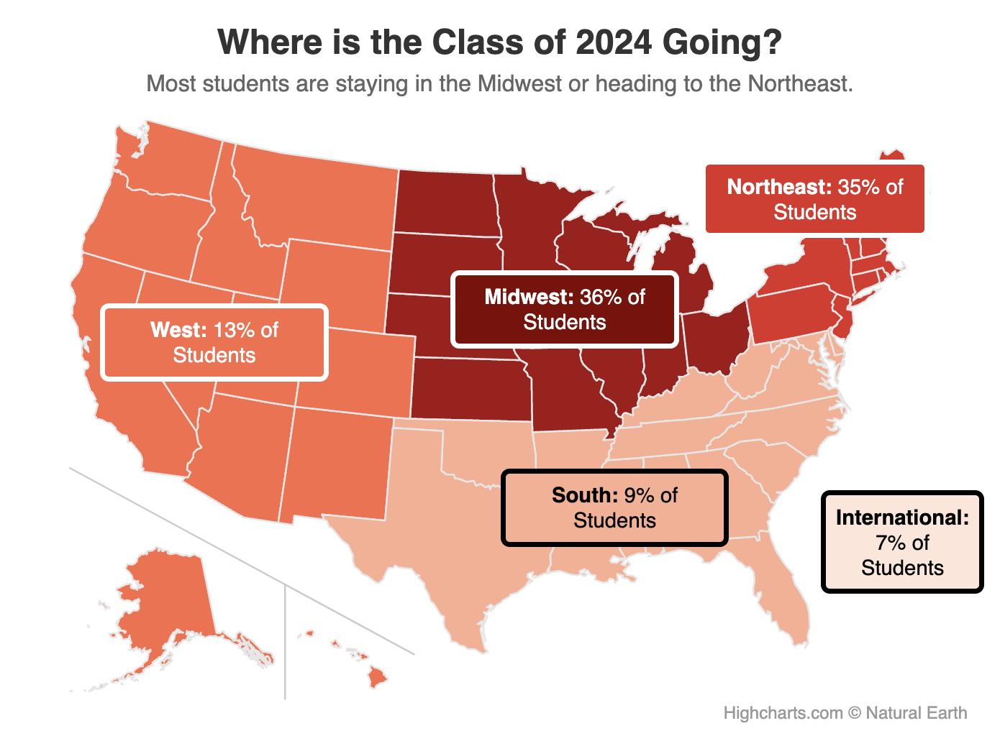

Example Data Visuals in The Maroon
This document shows examples of data visualizations in
Chicago Maroon articles. If you would like to use one of
these graphs as a starting point for another graph, follow
the corresponding link to the graph's source code in our
GitHub repository.
Bar Charts
A simple horizontal bar chart with horizontal axis units in
thousands of dollars.
Column Charts
A column chart with three series over four groups along with
a caption clarifying an edge case.
A stacked column chart with numerical labels above each bar
and a clarifying caption.
A stacked column chart with many columns.
Line Charts
A line chart with irregular time intervals.
A line chart with multiple series that start at different
times.
A complex line chart with several series.
A line chart with series labels.
Pie Charts
Word Clouds
Maps (HighCharts)
A HighCharts map of the US with multiple colors of pins.

A HighCharts map with labels over regions added via HTML.
(Note: the labels only line up properly when the map window
has the correct dimensions)
Maps (Google Maps)
A Google Maps map with two pins.
A Google Maps map with many pins.
Maps (Leaflet)
A Leaflet map with graduated symbols of different shapes and
colors.
Other
A custom HTML visual showing political donation amounts
visually.